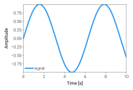
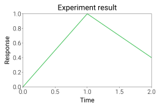

compare_before.svg

compare_after.svg

usage_guide: layout_tight.svg

usage_guide: layout_typography.svg

usage_guide: quickstart_multi_panel.svg

api: layout_example.svg

api: color_example.svg

color_system: color_space_conversion.svg